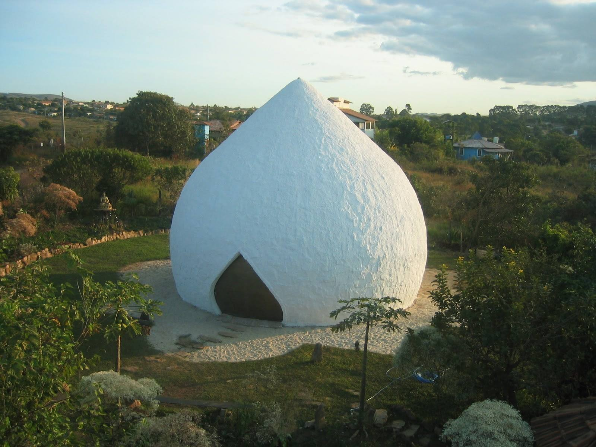
A sound temple built decades ago in the shape of a water drop — surrounded by water, clad in stone, opened by silence. Organic in form, biodynamic in vibration.
Alexandre visited this space during a stay near Sahar's Noor Sanctuary. The experience opened the conversation that now lives in this proposal.
A masterpiece is honored — never copied. It is honored through what it inspires.
The world's largest sound healing dome, inaugurated by A. R. Rahman — built across nearly two decades of acoustic research by Svaram, the renowned sound research lab of Auroville, India.
A seven-fold sacred geometry — one fold for each chakra — calibrated to support nervous system regulation and inner stillness. Music becomes architecture; architecture becomes instrument.
Acoustic precision — calibrated frequency across the volume.
Sacred geometry — proportion as instrument, not ornament.
The Svaram team — the same group that built the Sonorium with Rahman.
@svaram.auroville · @tulah.life
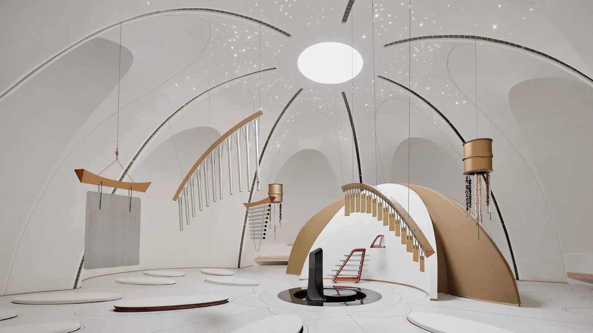
Eduardo Neira — Roth. Tulum, México.
Twenty years of textile architecture,
catenary forms, full integration with the site.
No conventional columns. Vines, cured concrete, regional woods. Each structure is woven — like a basket — in direct dialogue with the trees already standing on the land.
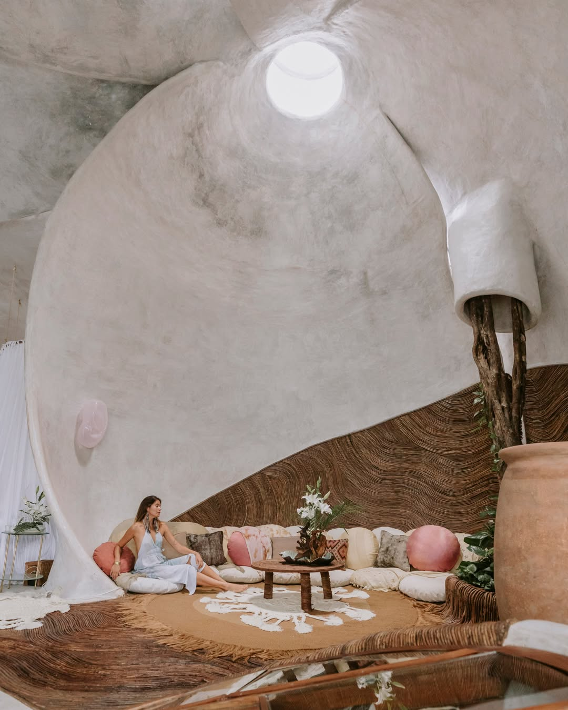
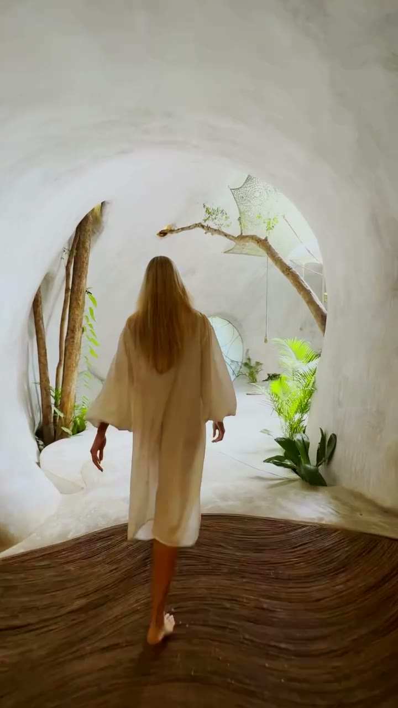
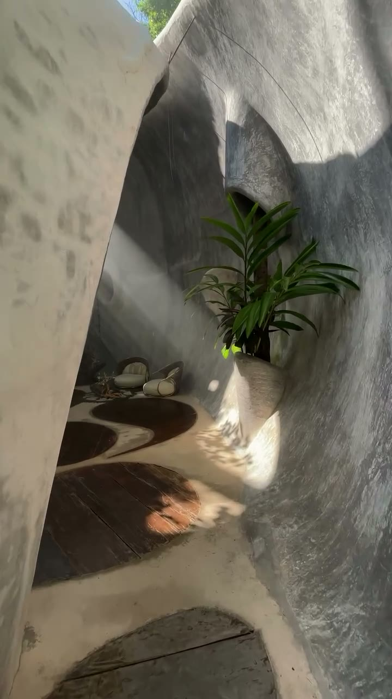
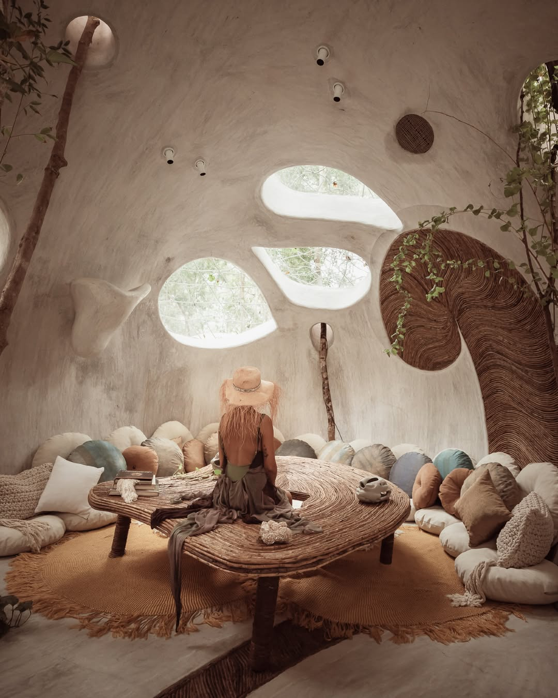
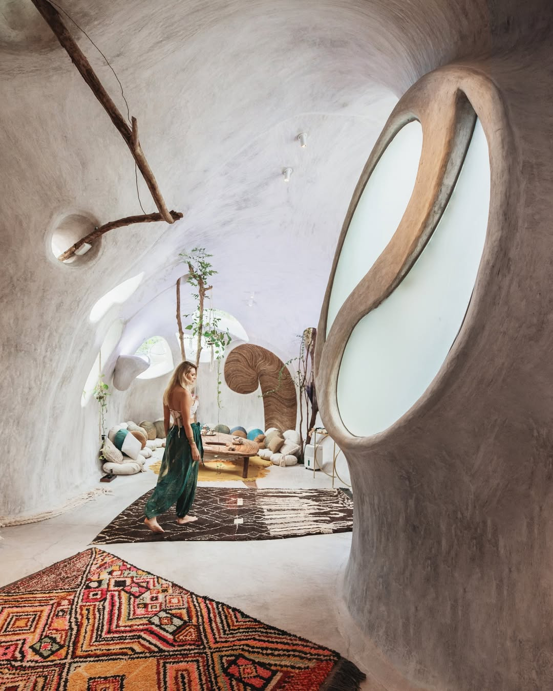
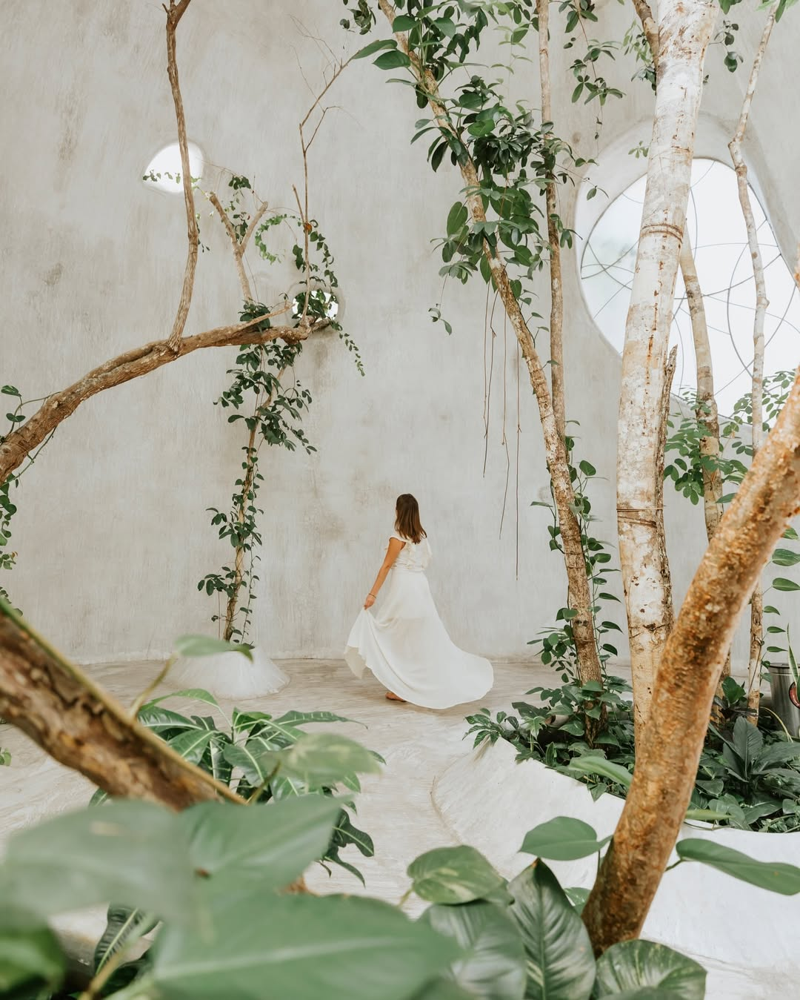
Built with the space, not upon it. Scale is negotiated with the body, not with the monument. There is no interruption between built and living — envelope, floor, vegetation: one single matter.
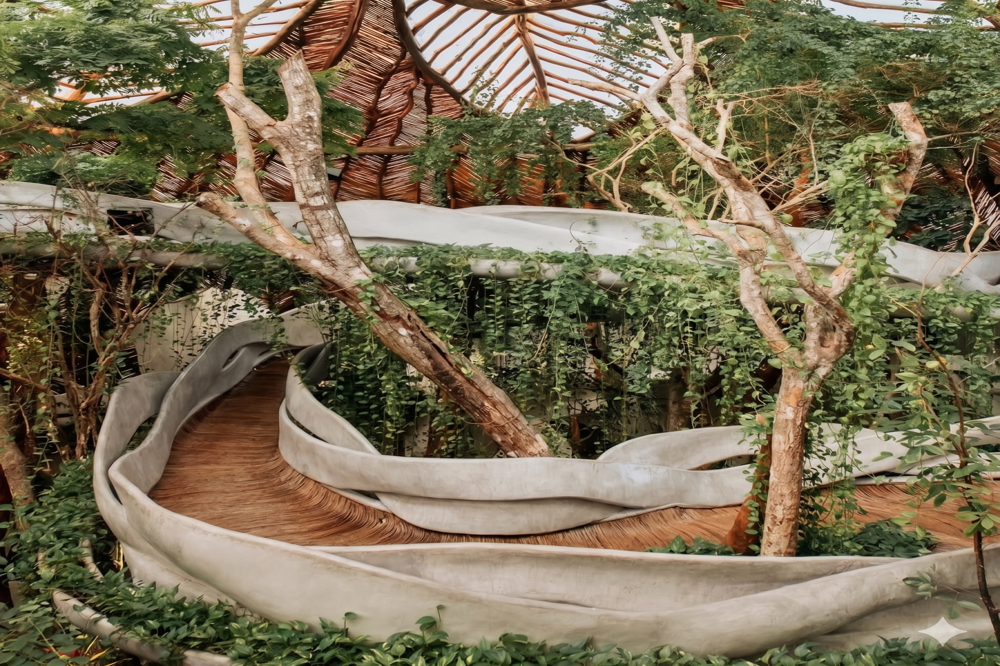
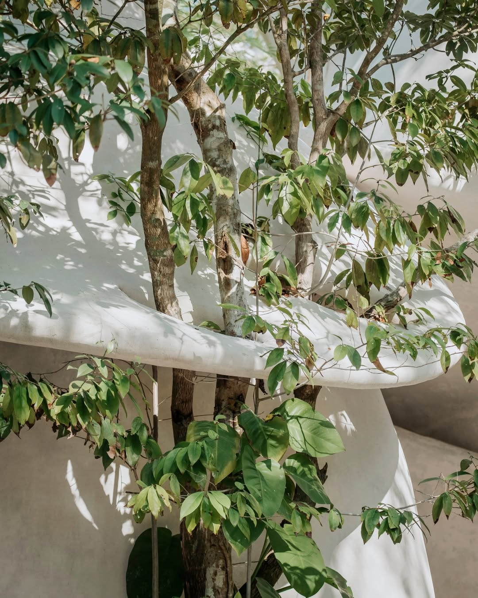
In this architecture the constructive detail is also the poetic gesture: the tree crosses through, the human hand remains visible, and ancestral technique converges into a single operation — to weave rather than to stack.
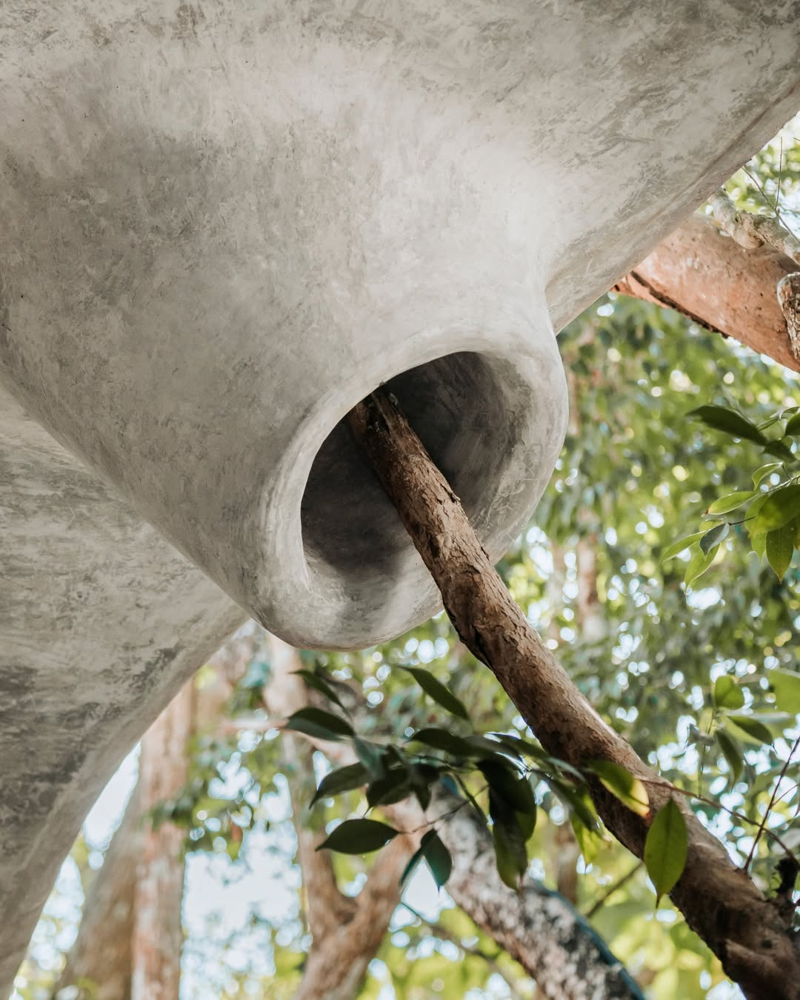
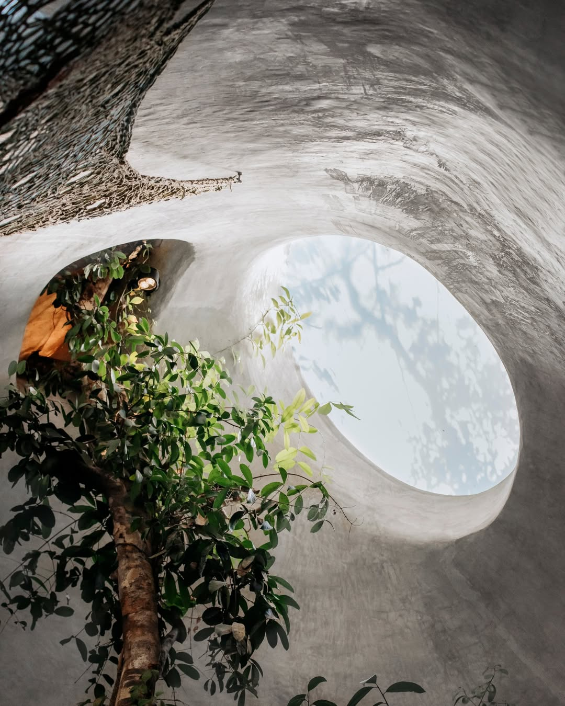
A cured concrete dome, catenary geometry.
No internal columns. Structural mass distributes along the curve itself — a hollow carved from matter, not a room built upon the ground.
The acoustic effect comes from the form: sound travels the surface without right angles. Every point in the chamber receives the frequency with equal pressure.
Cured concrete in thin, hand-worked layers. Natural vine as the textile counterpoint — across internal and external surfaces. Regional Brazilian wood for the floor. Brazilian indigenous textiles — locally sourced — bring presence and continuity to the space.
Direct continuity with the vocabulary of AYA, already present at Cidade Matarazzo. The piece does not impose — it responds.
Whoever enters slows down before thinking.
The inner silence becomes quieter than any silence from outside.
Whoever enters the sacred space will be touched by the frequency we have created within this sound temple.
Those who leave, leave the space carrying a higher frequency.
An autonomous piece — with its own presence, its own program, its own voice, its own personality — completing the whole.
Descendant of the Qajar dynasty, Sahar has lived in exile for decades — a citizen of the world. Switzerland. The United Kingdom. Goa. New York. Ibiza. Portugal.
Her true home — the land that received her — is Alto Paraíso, Brazil, where she has lived for twenty years. There she created Noor Sanctuary: a living altar that breathes healing and light, blessed by indigenous elders and medicine carriers from many traditions.
For years Sahar has been creating altars across Europe — for festivals, gatherings, and large conferences. Her practice is grounded in sacred geometry, numerology, astrology, lunar cycles and sound frequencies.
Through Sahar Curation she brings together the most renowned therapists, healers and craftspeople of her global network. The sound temple has long been the design she most yearned to bring into the world. Cidade Matarazzo is its place.
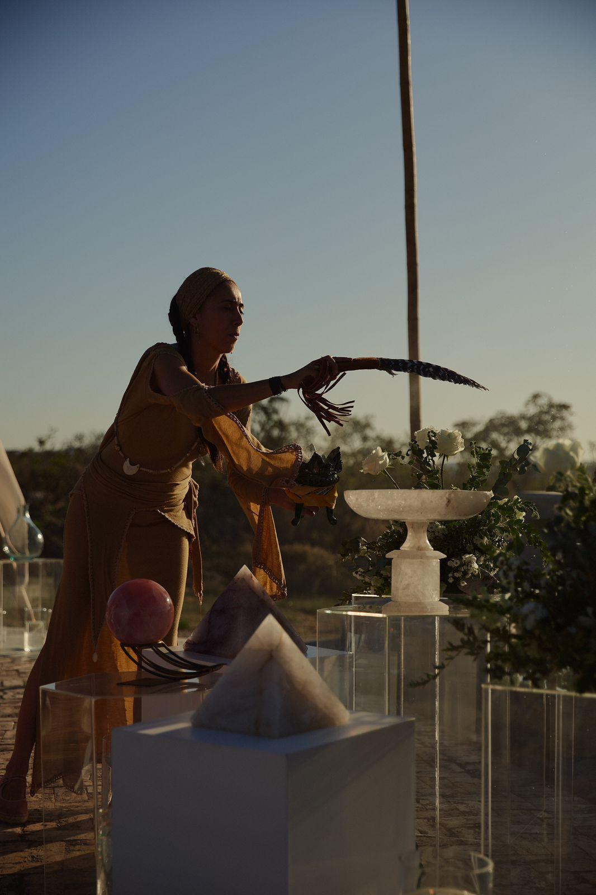
Sessão aberta · entrada paga · até 20 pessoas
Privados Rosewood · via concierge integrado
8 a 12 eventos/ano · lua cheia · lua nova · solstícios
Musicistas internacionais · Tulåh · Auroville · Esalen
Roth · briefing · aprovações
Estrutura · revestimento · interior
Svaram · programa · noite de gala
Goharik Faraon
tocando hang drum
para trinta pessoas.
Imprensa internacional de wellness na semana seguinte.
Architectural Digest · Wallpaper · T Magazine.
“Em árabe, ar significa unir.
A arquitetura existe
para unir o que foi separado.”
— Eduardo "Roth" Neira · Azulik
O AÔÔ já fala essa língua. O dome dá continuidade à frase.
Escolher Roth não é introduzir uma língua nova ao conjunto. É concluir uma frase que o próprio AÔÔ iniciou. A coerência arquitetônica entre AÔÔ e Uh May é literal — mesmo material, mesma técnica têxtil, mesma escola.
Qualquer outro arquiteto entraria falando outra língua que um prédio existente do conjunto. Roth entra dando sequência.
Time do Azulik. Time do Sonorium. Atração internacional desde o dia um. Fala para o mundo.
Linguagem mais limpa, mais geométrica, ancorada em SP. Mesma alma ecológica. Fala para São Paulo.
Bambu trabalhado por artesãos do Alto Paraíso. Pegada de carbono mínima. Fala para a Mata Atlântica.
Por três razões objetivas:
01. Continuidade arquitetônica com o AÔÔ — coerência literal.
02. Atração de imprensa internacional desde a abertura.
03. Time já operante em projeto análogo — risco técnico reduzido.
Números de ordem de grandeza — orçamento fechado depende do briefing detalhado com os três times.
Valor fixo. Cobre coordenação dos três times, curadoria do desenho interno, curadoria da programação cultural do primeiro ano, e a inauguração.
Entrada · destrava Roth e Svaram
Conclusão da estrutura física
Marco final · gala
Operação pelo Rosewood · Sahar Curation como curadora externa anual.
Sahar Curation opera dentro da Cidade Matarazzo · revenue share.
Diárias pelo Rosewood · eventos especiais pela Sahar Curation. Recomendação inicial.
01. Briefing técnico · 2–3 semanas
02. Apresentação preliminar Roth e Svaram
03. Proposta detalhada · escopo, orçamento, cronograma
04. Decisão e assinatura
Fechamento da fase preliminar previsto para 2 de junho.